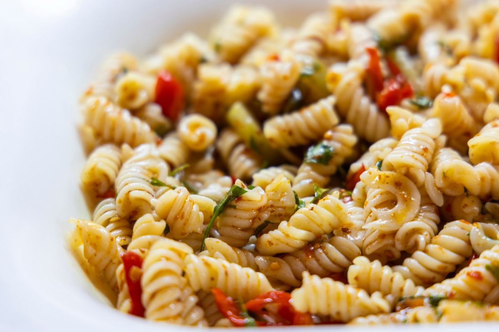
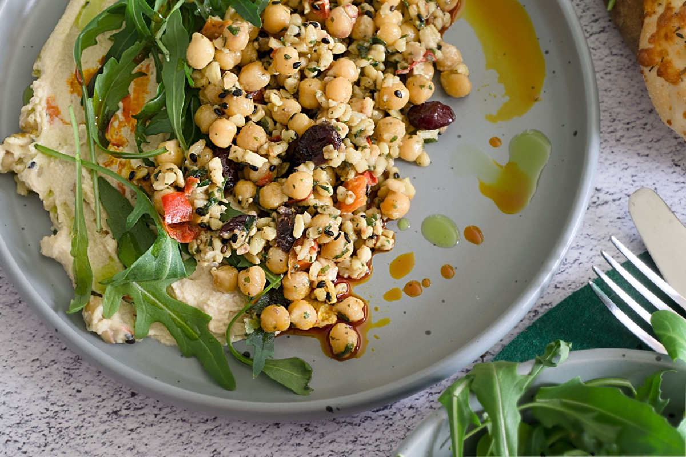

⏱ 25 min | 🍽 2 personen | 🌱 Vegetarisch
Naam recept 1
Dit is een korte omschrijving van recept 1.
Bekijk receptOntdek drie snelle en gezonde gerechten die je binnen het halfuur op tafel tovert.
Deze recepten zijn speciaal voor je samengesteld door onze beste chefs.

⏱ 25 min | 🍽 2 personen | 🌱 Vegetarisch
Dit is een korte omschrijving van recept 1.
Bekijk recept
⏱ 25 min | 🍽 2 personen | 🌱 Vegetarisch
Dit is een korte omschrijving van recept 2.
Bekijk recept
⏱ 25 min | 🍽 2 personen | 🌱 Vegetarisch
Dit is een korte omschrijving van recept 3.
Bekijk receptNaast het koken van heerlijke gerechten, is het belangrijk om een gezonde levensstijl te behouden. Hier zijn enkele tips: